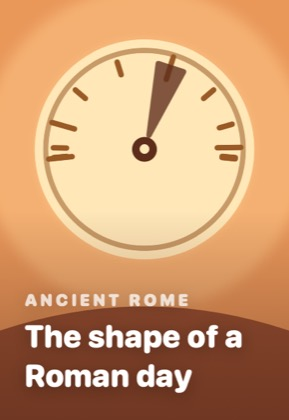
The shape of a Roman day
Rome ran on daylight, not clocks — and it made for a very strange kind of hour.
A day of history, every day
Seven or eight cards. Swipe up, like a reel. Every one of them cites where it came from — and says so when historians disagree.
Not out yet. TestFlight is open while we finish it.
The doors were shut. Everyone in the room died with her. Every account we have was written by people who were not there.
No feed, no infinite scroll, no streak nagging you at 9pm. It ends.
One a day, already chosen. You don't browse to start — you just read.
A hook, the evidence, the complication, the bit nobody tells you. Three minutes.
Not a test. Get one wrong and you get the explanation, not a red cross. It comes back in a few days.
There is nothing else to do. That's on purpose.
Fourteen stories, ninety-nine cards, four seasons. Every card sourced.
The clock, the bath, the rent — an ordinary day, by the numbers.

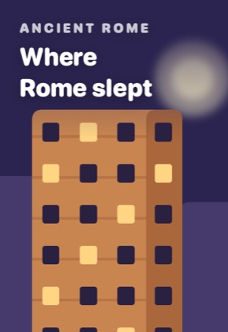
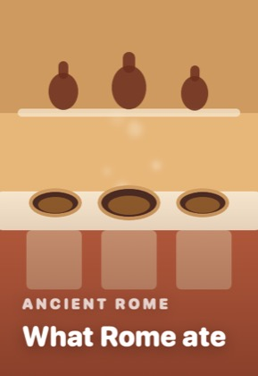
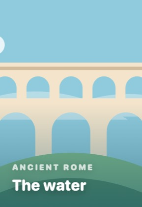
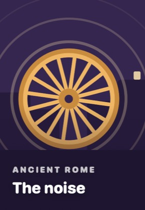
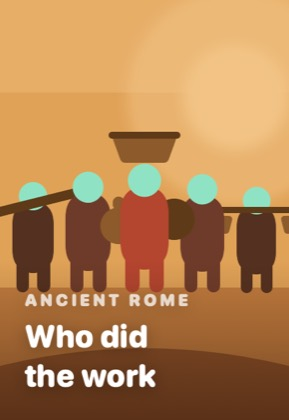
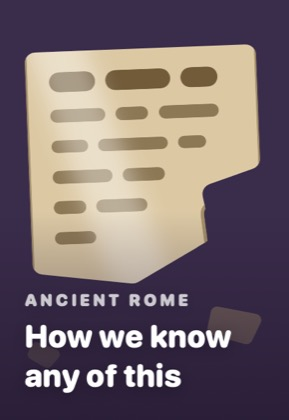
Three stories about Cleopatra, read against the people who wrote them down.
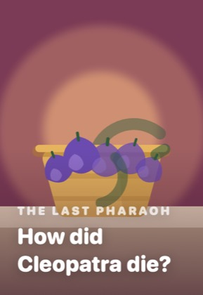
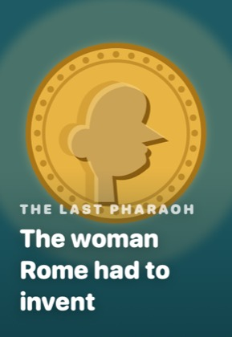
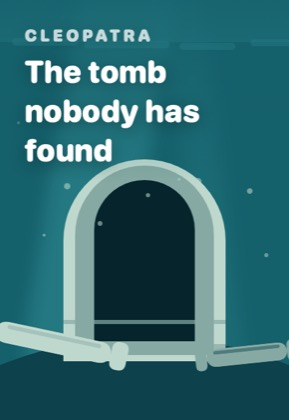
A sin list, a lost golden box, and a woman the Church renamed.
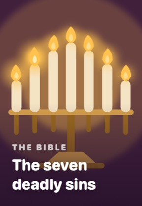
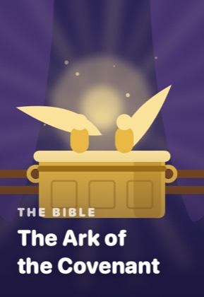
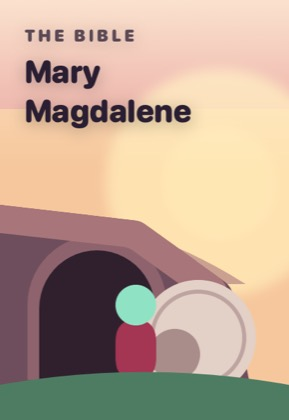
People we've flattened into statues, put back at life size.
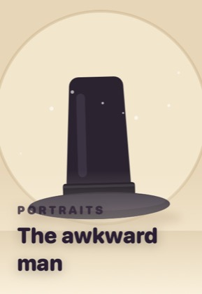
Not a bibliography at the back. Two independent sources minimum, on the card itself, one tap away.
“The seven deadly sins aren't biblical.”
A card that's disputed carries the dispute on its face — what's argued about, and by whom. We would rather tell you the date is a reconstruction than pick one and sound confident.
Pip reads everything before you do, and collects a hat from every era you finish. Pip is not a person, which is deliberate — a creature can belong to every century without belonging to any of them.
Free while we're building it.
Not out yet. TestFlight is open while we finish it.